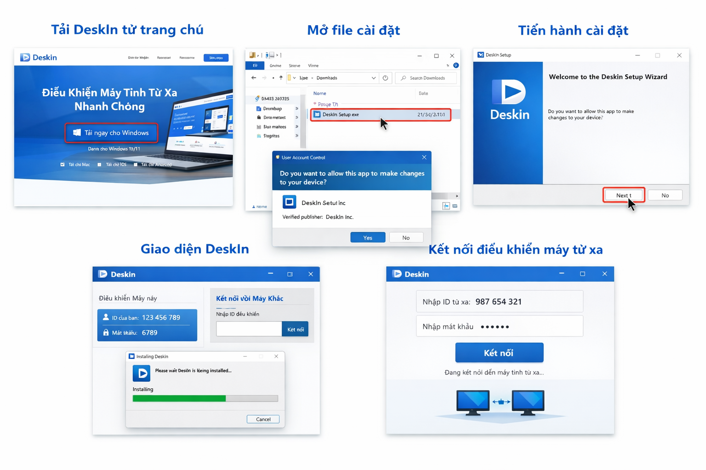

DeskIn là gì?
DeskIn là phần mềm điều khiển máy tính từ xa, hỗ trợ kết nối nhanh, ổn định và dễ sử dụng. Bài viết này hướng dẫn bạn cài DeskIn trên Windows từng bước, kèm ảnh minh họa thực tế để dễ thao tác hơn.
Tổng quan 5 bước cài đặt
Dưới đây là hình minh họa tổng hợp toàn bộ quy trình từ tải phần mềm đến kết nối máy tính từ xa bằng DeskIn.

Tải DeskIn từ trang chủ
Mở trình duyệt và truy cập website chính thức của DeskIn để tải đúng phiên bản cho Windows.
- Truy cập website chính thức của DeskIn.
- Chọn phiên bản dành cho Windows.
- Nhấn tải file cài đặt về máy.

Mở file cài đặt
Sau khi tải xong, bạn mở thư mục Downloads và chạy file cài đặt để bắt đầu quá trình thiết lập.
- Vào thư mục Downloads.
- Nhấp đúp vào file cài đặt .exe.
- Chọn Yes nếu Windows hiển thị cảnh báo bảo mật.

Tiến hành cài đặt
Trình cài đặt sẽ hiện ra. Bạn chỉ cần xác nhận vài bước đơn giản để hoàn tất.
- Nhấn Next để tiếp tục.
- Chọn Install để bắt đầu cài.
- Chờ vài giây đến khi hoàn tất và nhấn Finish.

Mở DeskIn và xem ID, mật khẩu
Sau khi cài xong, mở phần mềm để kiểm tra giao diện chính và lấy thông tin kết nối.
- Mở phần mềm DeskIn sau khi cài xong.
- Đăng nhập hoặc tạo tài khoản nếu cần.
- Ghi lại ID và mật khẩu để kết nối từ xa.

Kết nối điều khiển máy tính từ xa
Nhập ID và mật khẩu của máy cần điều khiển, sau đó nhấn nút kết nối để bắt đầu sử dụng.
- Nhập ID của máy cần kết nối.
- Nhập mật khẩu được cung cấp.
- Nhấn Kết nối để bắt đầu điều khiển.

Lưu ý quan trọng
Chỉ chia sẻ ID và mật khẩu cho người đáng tin cậy. Khi đăng bài lên website hoặc landing page, bạn có thể thay nút liên hệ bằng số điện thoại, Zalo hoặc link Facebook của mình.
Cần hỗ trợ cài đặt DeskIn?
Liên hệ với bạn để được hỗ trợ nhanh hoặc dùng phần nội dung này để đăng website, fanpage và landing page.
Liên hệ ngay